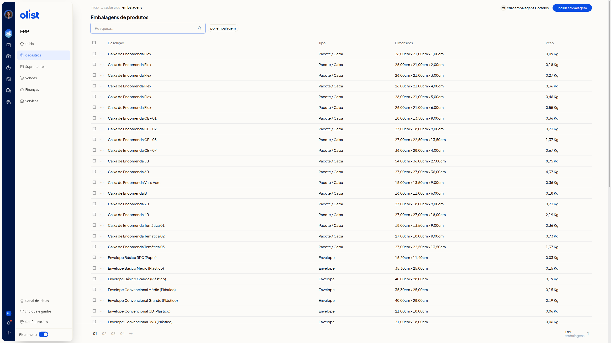
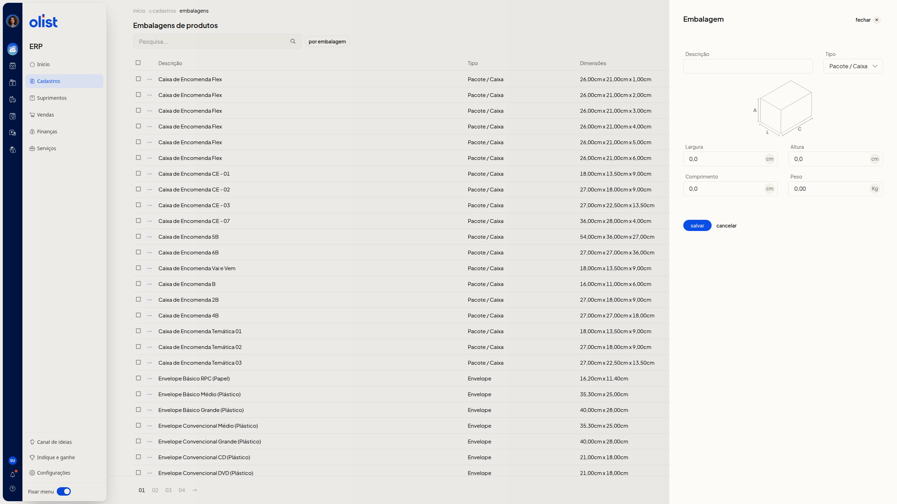
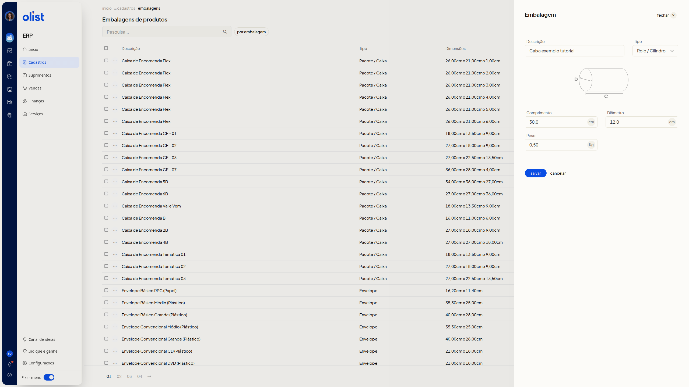

Embalagens
Descrição
A página Embalagens de produtos do ERP da Olist lista as embalagens já cadastradas e permite incluir uma nova. Em Tipo, você escolhe Envelope, Pacote / Caixa ou Rolo / Cilindro. As medidas exibidas mudam conforme a opção.
Acesse Cadastros no menu lateral do ERP. O caminho é início > cadastros > embalagens.
Pré-requisitos
Você precisa de permissão para Embalagens de produtos para acessar a tela.
Instruções
Como consultar a lista de embalagens
-
Acesse Cadastros no menu lateral do ERP e abra a página Embalagens de produtos.
-
Consulte a lista nas colunas Descrição, Tipo, Dimensões e Peso. Busque no campo Pesquisa..., use o filtro por embalagem e percorra as páginas.

-
Confira as dimensões em cm e o peso em Kg. A lista de embalagens cadastradas fica visível, com busca, filtro e paginação.
Como cadastrar uma embalagem
Nenhum campo é obrigatório.
- Na página Embalagens de produtos, clique em Incluir embalagem.
- Preencha Descrição com texto livre. Exemplo: Caixa exemplo tutorial.
- Escolha Envelope, Pacote / Caixa ou Rolo / Cilindro em Tipo. Ao abrir, Envelope já vem selecionado.
-
Envelope: informe Largura, Comprimento e Peso.
-
Pacote / Caixa: informe Largura, Altura, Comprimento e Peso.
-
Rolo / Cilindro: informe Comprimento, Diâmetro e Peso. Diâmetro é a marca D e Comprimento é a marca C. Ao mudar de Pacote / Caixa para Rolo / Cilindro, Descrição, Comprimento e Peso já preenchidos permanecem.

-
Informe as medidas em cm e o Peso em Kg, com vírgula decimal. Em Pacote / Caixa, exemplos: largura 20,0, altura 15,0, comprimento 30,0 e peso 0,50. Em Rolo / Cilindro, exemplos: comprimento 30,0, diâmetro 12,0 e peso 0,50.

-
Clique em salvar para confirmar o cadastro.
Links relacionados
Se precisar de ajuda, fale com o suporte.